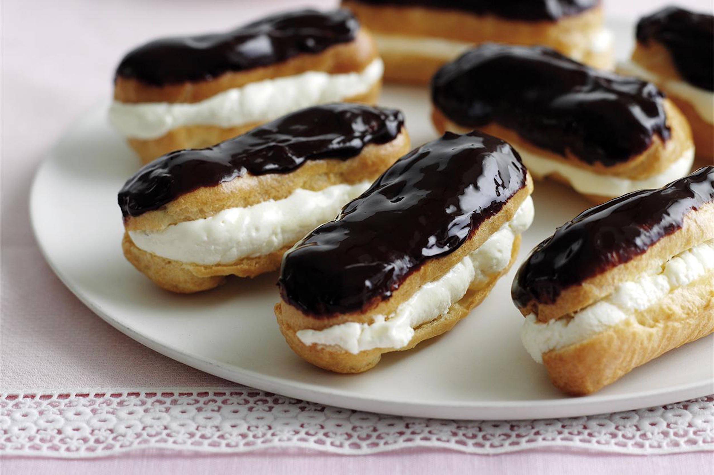

Delicious French Desserts
Crème Brûlée
Description: A creamy custard dessert topped with a caramelized sugar crust.
Ingredients:
- 2 cups heavy cream
- 1 vanilla bean (split and scraped)
- 5 egg yolks
- 1/2 cup sugar
- Extra sugar for topping
Preparation Steps:
- Preheat oven to 325°F (160°C).
- Heat cream and vanilla bean in a saucepan until hot (do not boil).
- Whisk egg yolks and sugar until pale, then slowly mix in hot cream.
- Pour the mixture into ramekins and bake in a water bath for 40 minutes.
- Chill for 2 hours, then sprinkle sugar on top and caramelize with a torch.
Macarons

Description: Colorful almond meringue cookies filled with a variety of flavored creams.
Ingredients:
- 1 cup almond flour
- 1 3/4 cups powdered sugar
- 3 large egg whites
- 1/4 cup granulated sugar
- Food coloring (optional)
- Buttercream or ganache for filling
Preparation Steps:
- Sift almond flour and powdered sugar together.
- Whip egg whites and granulated sugar into stiff peaks, then gently fold in the dry ingredients.
- Add food coloring, if desired, and pipe small circles onto a baking sheet.
- Let sit for 30 minutes before baking at 300°F (150°C) for 15 minutes.
- Once cooled, sandwich cookies with your chosen filling.
Tarte Tatin
Description: An upside-down caramelized apple tart baked to perfection.
Ingredients:
- 5–6 apples (peeled and sliced)
- 1/2 cup sugar
- 1/4 cup butter
- 1 sheet puff pastry
Preparation Steps:
- Preheat oven to 375°F (190°C).
- In a skillet, melt butter and sugar until golden brown.
- Arrange apple slices over the caramel, then top with puff pastry, tucking in the edges.
- Bake for 25–30 minutes, then invert onto a plate while warm.
Éclairs
Description: Choux pastry filled with custard and topped with a glossy chocolate glaze.
Ingredients:
- 1 cup water
- 1/2 cup butter
- 1 cup flour
- 4 eggs
- Pastry cream for filling
- Chocolate glaze for topping
Preparation Steps:
- Boil water and butter in a saucepan, then stir in flour until a dough forms.
- Remove from heat, add eggs one at a time, and mix until smooth.
- Pipe dough into long strips and bake at 400°F (200°C) for 20–25 minutes.
- Fill with pastry cream and top with chocolate glaze once cooled.
Mille-Feuille
Description: A delicate dessert with layers of puff pastry and pastry cream, topped with icing.
Ingredients:
- 1 sheet puff pastry
- 2 cups pastry cream
- 1/2 cup powdered sugar
- 2 tbsp milk
- Chocolate for decorating
Preparation Steps:
- Bake puff pastry sheet until golden and crisp.
- Cut into equal rectangles and layer with pastry cream.
- Mix powdered sugar and milk to create icing, then spread on top.
- Decorate with chocolate lines and a fork to create a pattern.